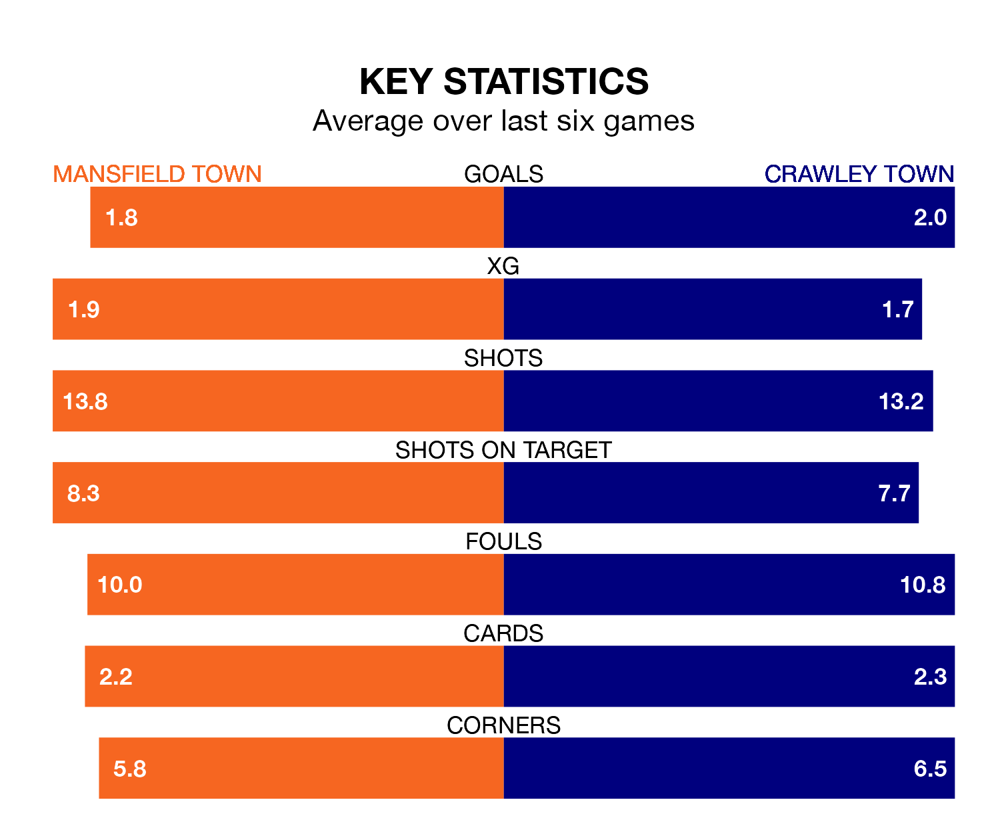

Mansfield Town host Crawley Town in Saturday's match at the One Call Stadium looking to bounce back from defeat last time out in EFL League Two.
The Stags, who sit second in the league after 40 games, fell to a 2-0 away defeat to Wrexham on March 29.
They face a Crawley side who picked up a win in their last match, a 4-0 victory against Newport County, and who sit seventh in the table.
With 79 goals in 40 games so far this season, Mansfield are the league's joint-second-highest scorers with 2.0 goals per game. And they are conceding fewer than average, letting in 39 goals at a rate of 1.0 per game.
Crawley, meanwhile, are average scorers, with 1.5 goals per game. They have conceded 1.4 goals per game.
In the last 10 years, Mansfield and Crawley have played each other on 16 occasions. Mansfield won eight of them, Crawley four, and they drew four times.
On average, the Stags scored 1.8 goals and the Red Devils 1.1 in those matches.
Their last meeting was on December 16, when Mansfield won 3-1 away.
In Davis Keillor-Dunn, Mansfield Town have one of the league's most on-form strikers so far this season. He has notched 19 goals in 40 appearances, to sit fourth in the scoring charts.
His goal rate of one every 160 minutes is quicker than that of Danilo Orsi-Dadamo, Crawley Town's top scorer with a goal every 213 minutes, and a total of 16 goals in 39 games.
The Stags are in mixed form in EFL League Two, with two wins and a draw from their last six games.
With four wins and a draw over that period, the Red Devils' form is much better – they have taken 13 points from 18, compared to the hosts' seven.
Saturday's match will be refereed by Oliver Yates, who has taken charge of 14 EFL League Two games so far this season, issuing five red cards and booking 63 players. He has awarded five penalties.
The last Mansfield game Yates refereed was a 2-0 home win against Grimsby Town on December 26. His last Crawley match was their 1-0 loss at home against Wrexham on October 7.
Updated: 16:41 (UTC), 04/04/24